First Steps - #back to top
First, thank you for purchasing our theme!
This guide provides instructions for installation, help on getting started and extensive documentation of features. It is recommended you read it thoroughly to fully leverage the Zinco theme's capabilities. Please also make sure to check out our Video Tutorials as they explain everything covered in here in greater depth. We hope you enjoy building with Zinco as much as we enjoyed developing it and continue to develop with new features!
The shortcode will give the output as in below image
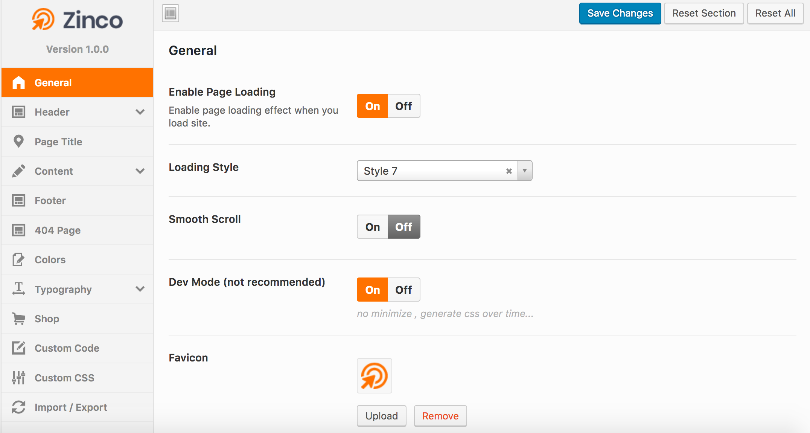
Server requirements is one of the key factors for WordPress and Zinco theme, it is highly recommended to use a server which supports the following requirements. We explain about WordPress, Zinco, WooCommerce server requirements.
WordPress requirements
WordPress recommends following server settings.
| Setting | Description |
|---|---|
| PHP | Version 7 or greater. |
| MySQL | Version 5.6 or greater. |
| MariaDB | Version 10.0 or greater. Only required if you are not using MySQL. |
| HTTPS | Supported by the server. |
Zinco requirements
We recommends following server settings for Our WordPress Theme:
| Setting | Description |
|---|---|
| PHP | Version 5.6 or greater. |
| MySQL | Version 5.6 or greater |
| mod_rewrite | The Apache module needs to be activated for pretty permalinks. |
| GD Library | The library needs to be installed for Captcha and Image cropping. |
| cURL | Supported by the server. |
| OpenSSL | Supported by the server. |
| allow_url_fopen | Supported by the server. |
| post_max_size | 64 MB or greater |
| upload_max_filesize | 64 MB or greater |
| memory_limit | 256 MB or greater |
| max_execution_time | 900s or greater |
| max_input_vars | The minimum value is 4000 but the recommended is 6000. |
WooCommerce requirements
Zinco support WooCommerce officially so it is best to make sure your server also supports this plugin requirements if you are going to set up a shop.To learn about the plugin server requirements, read the official article.
Before beginning the installation and configuring of your new theme, you must first have WordPress already installed on a server.
If you are struggling, here is a very detailed guide at Wordpress Codex that will walk you through every step.
If you prefer something more visual, you can watch this video tutorial on how to install Wordpress by us
Once you have setup a copy of WordPress, there are two ways you can go about installing the theme:
- 1. FTP Upload
Unzip the download and upload the theme directory into your WordPress themes directory /wp-content/themes/.
- 2. WordPress Upload
This is definitely the easier route for most. Simply navigate to Appearance > Themes > Add New > Upload Theme. Click the 'browse' button and locate the still zipped theme folder. The theme will be uploaded and installed in a matter of seconds.
Demo Data - #back to top
There are two methods you can use, one is using our One-click Importer, the other is Importing manually. Zinco
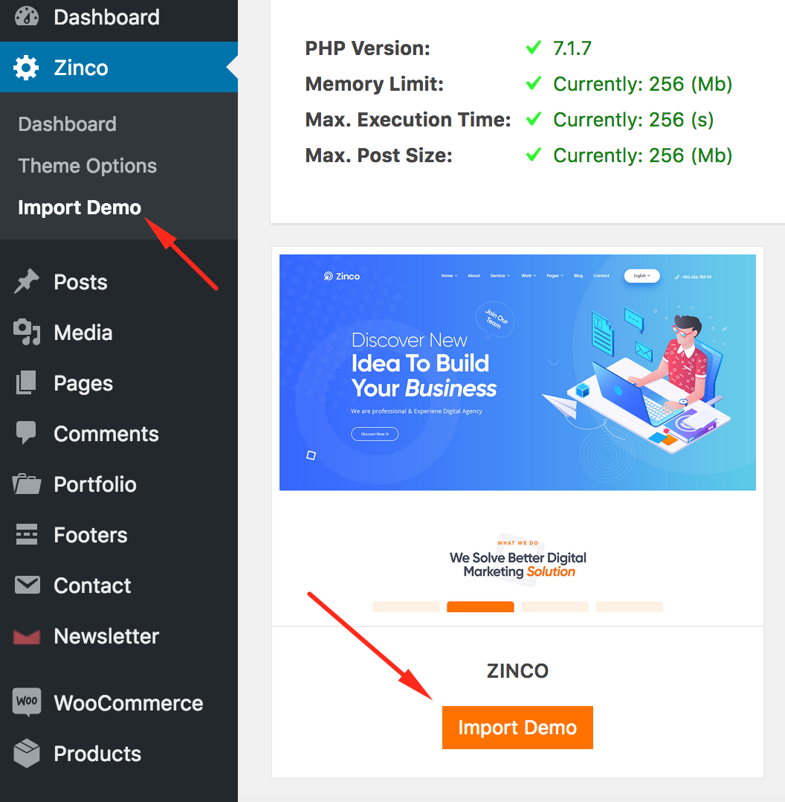See video tutorial:
-
Step-1 : Import XML
To import demo content by yourself, please follow some steps below:
You need to extra theme package file. And then:
- 1. Go to Tools > Import.
- 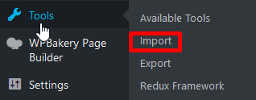
- 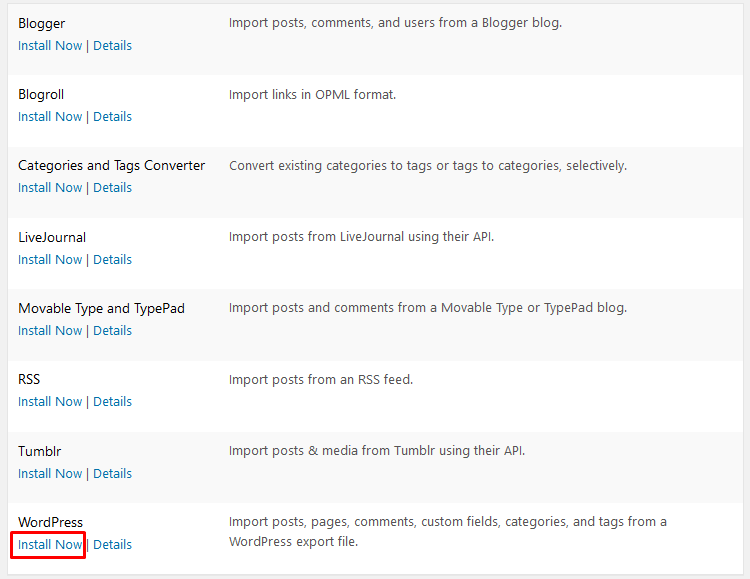
- 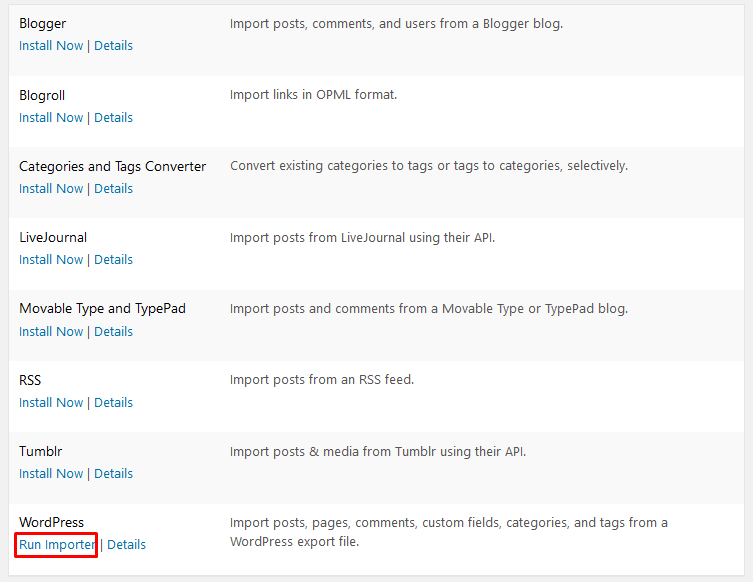
2. You need upload two files on the path below:
- - unfinityplus > inc > demo-data > theme-name > content > attachment-data.xml
- - unfinityplus > inc > demo-data > theme-name > content > content-data.xml
- 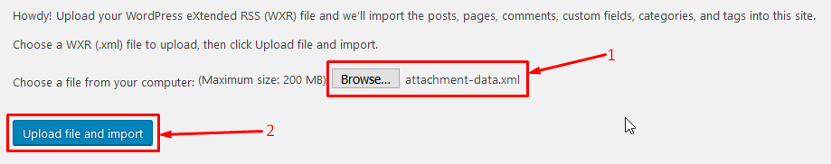
- 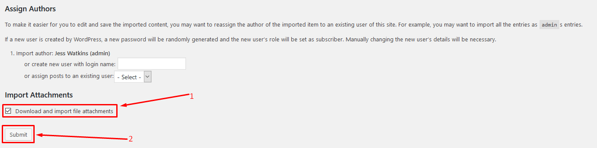
-
Step-2 : Import Options
1. On Zinco tab, click Theme Options > Import/Export
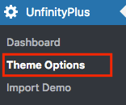
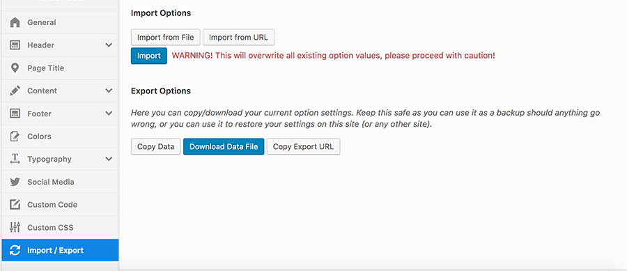
2. Click Import from File
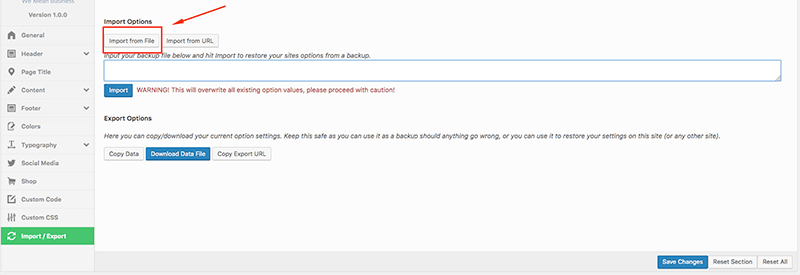
3. Open file options.json on the the path: unfinityplus > inc > demo-data > theme-name > options.json .
4. Copy all content of options.json file and then paste it into text area.
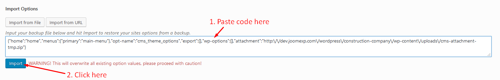
-
Step-3 : Import Setting
1. On Zinco tab, click Theme Options > Import/Export
2. Click Import from File
3. Open file settings.json on the the path: unfinityplus > inc > demo-data > theme-name > settings.json .
4. Copy all content of settings.json file and then paste it into text area.
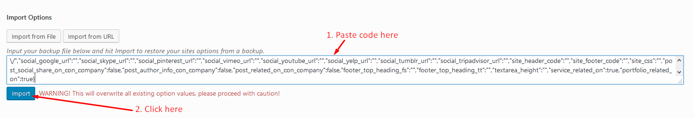
-
Step-4 : Import widgets
1. You must install Widget Importer & Exporter plugin before.
2. Go to Widget Importer & Exporter on the Tools menu
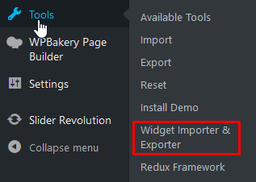
3. Click Browse.. button and upload file widgets.wie on the path unfinityplus > inc > demo-data > theme-name > widgets.wie .
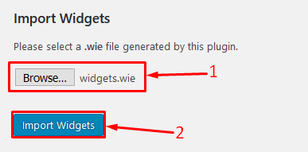
-
Step-5 : Import Slider
- 1. Go to Slider Revolution.
- 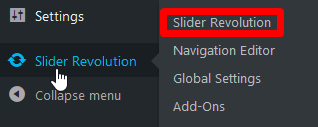
- 2. Import slider.
- 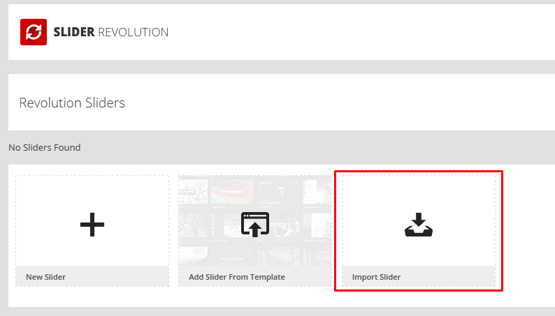
- 3. You upload slider on the path unfinityplus > inc > demo-data > theme-name > revslider > demo-slider.zip. You need upload all sliders on here.
- 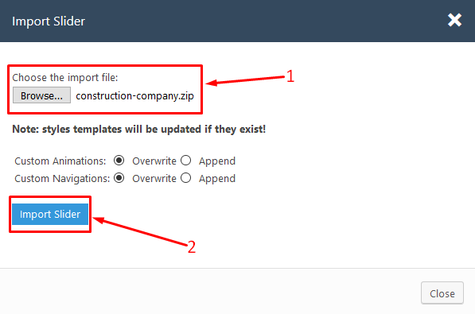
After all finished, you will have the perfect website like our demo.
Plugins - #back to top
After installation, you will be suggested to install additional plugins. To install them and activate, please navigate to Plugins, you will see a list of required and optional plugins. We recommend that you install the following to get the best of our theme:
Visual Composer is the most popular drag and drop editor for wordpress.
If you need dedicated support for this component, please visit: Visual Composer on Code Canyon
This plugin patches (as long as it is active) the existent vulnerabilities in Revolution Slider plugin, including the latest SoakSoak (Arbitrary File Upload) vulnerability.
You can also monitor using the “Black list” option all the attackers that attempt to use a Revolution Slider exploit to gain access to your website.
For detailed inforamtion and support on this plugin, please go to: Revolution Slider
WooCommerce is a free eCommerce plugin that allows you to sell anything, beautifully. Built to integrate seamlessly with WordPress, WooCommerce is the world’s favorite eCommerce solution that gives both store owners and developers complete control.
If you need dedicated support for this plugin, please visit: WooCommerce
Newsletter is a real newsletter system for your WordPress blog: perfect for list building, you can easily create, send and track e-mails, headache-free.
It just works out of box!
For detailed inforamtion and support on this plugin, please go to: Newsletter
Contact Form 7 is one of the most popular form builders for wordpress.
We have created styles ready for you to use within your Zinco theme.
For detailed inforamtion and support on this plugin, please go to: Contact Form 7
You will see notice about update plugin like
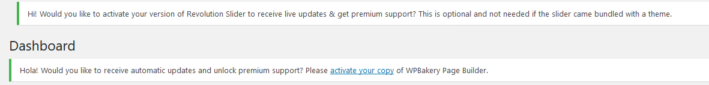
We can't give you 1 license key to active auto plugin Visual Composer and Revolution Slider.
Because you can read about the differences between the extended and regular licence. We are permitted to give you the purchase code of the plugins because of policy and terms of Theme Forest. We always update the plugins via theme updates and you will receive the latest version of this plugins via email.
If you want plugin auto update please buy regular license in Visual Composer and Revolution Slider
Menu - #back to top
- 1. From the 'Appearance' menu on the left-hand side of the Dashboard, select the 'Menus' option to bring up the Menu Editor.
- 2. Select create a new menu at the top of the page
- 3. Enter a name for your new menu in the Menu Name box.
- 4. Click the Create Menu button.
- 5. Click Select to select menu created.
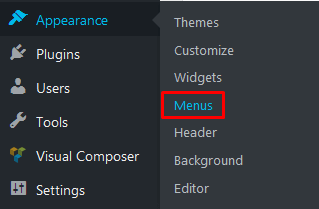
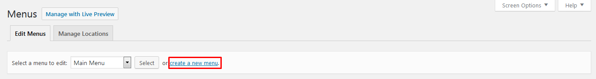
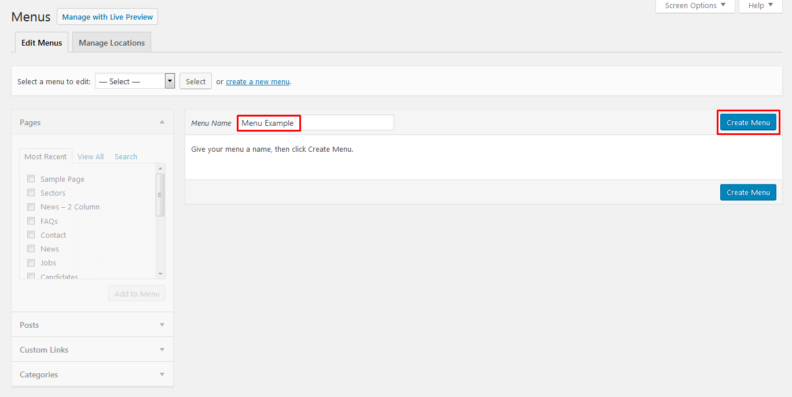
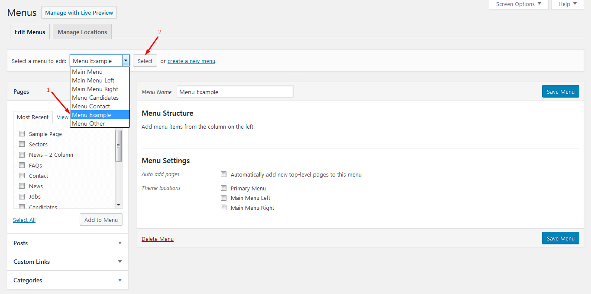
Your new custom menu has been defined.
You can add different link types into your menu, these are split between panes left of the menu you're currently editing.
- 1. Locate the pane entitled Pages.
- 2. Within this pane, select the View All link to bring up a list of all the currently published Pages on your site.
- 3. Select the Pages that you want to add by clicking the checkbox next to each Page's title.
- 4. Click the Add to Menu button located at the bottom of this pane to add your selection(s) to the menu that you created in the previous step.
- 5. Click the Save Menu button once you've added all the menu items you want.
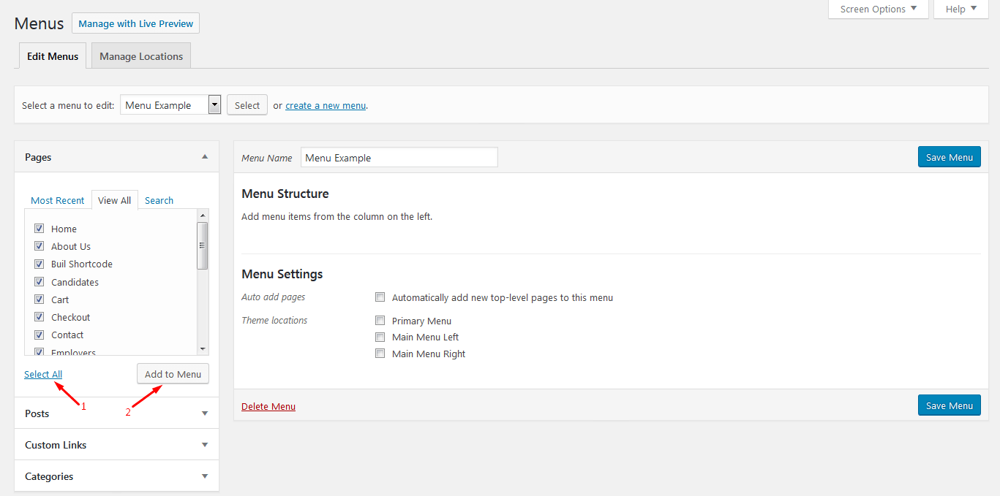
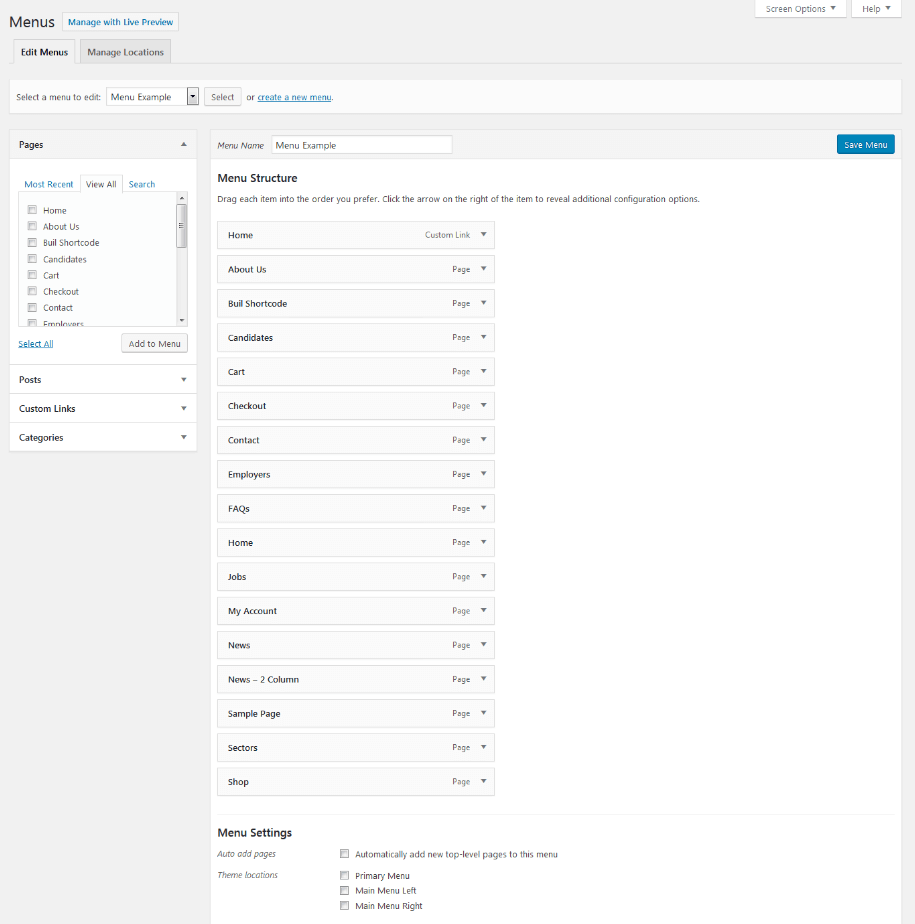
Your custom menu has now been saved.
When planning the structure of your menu, it helps to think of each menu item as a heading in a formal report document. In a formal report, main section headings (Level 1 headings) are the nearest to the left of the page; sub-section headings (Level 2 headings) are indented slightly further to the right; any other subordinate headings (Level 3, 4, etc) within the same section are indented even further to the right.
The WordPress menu editor allows you to create multi-level menus using a simple 'drag and drop' interface. Drag menu items up or down to change their order of appearance in the menu. Drag menu items left or right in order to create sub-levels within your menu.
To make one menu item a subordinate of another, you need to position the 'child' underneath its 'parent' and then drag it slightly to the right.
- 1. Position the mouse over the 'child' menu item.
- 2. Whilst holding the left mouse button, drag it to the right.
- 3. Release the mouse button.
- 4. Repeat these steps for each sub-menu item.
- 5. Click the Save Menu button in the Menu Editor to save your changes.
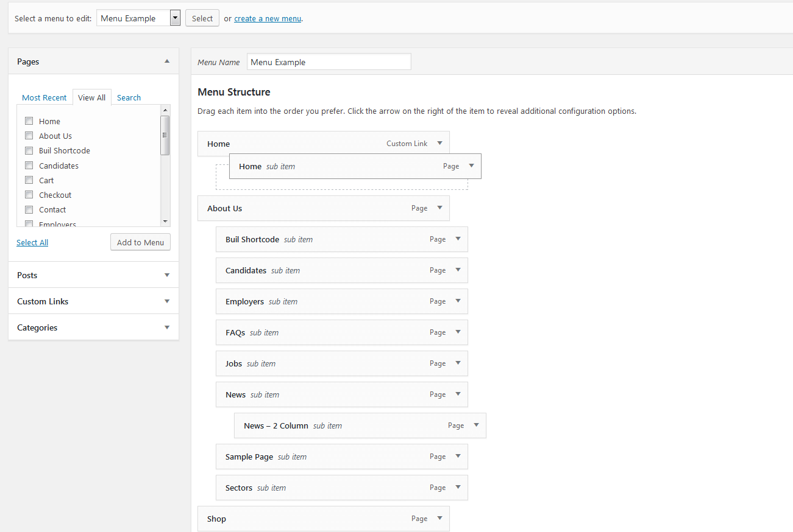
- 1. Scroll to the bottom of the menu editor window.
- 2. In the section titled Theme locations, click the check box for the location where you want your menu to appear.
- 3. Click Save menu once you've made your selection.
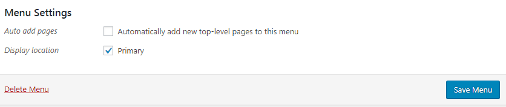
Congratulations! Your menu has now been added to your site.
You can set any menu as Primary menu here.
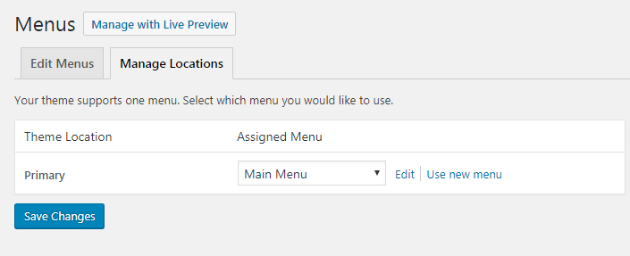
Widgets - #back to top
To Add Widget on Sidebar, please following these steps:
- 1. Navigate to Appearance>Widgets to access the list of widgets and widget section that they can be added. The left hand side show all widgets you can use. The right hand side shows all different section you can add widgets to.
- 2. Simply drag and drop the widget you want into the widgets section you want to the right hand side.
- 3. When you finished, you can visit the site to see results.
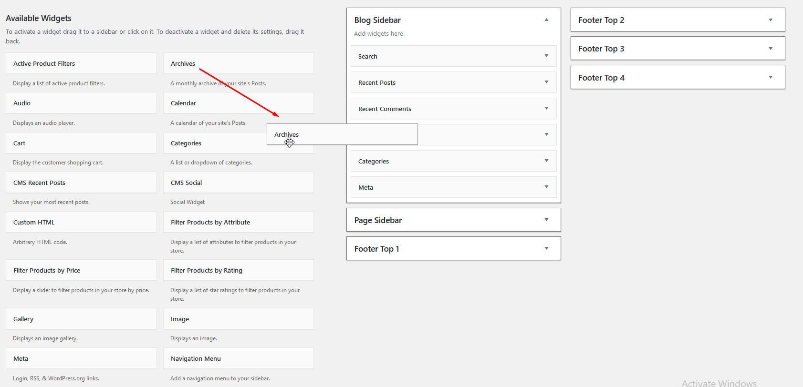
Theme Options - #back to top
The options panel is home to all of the theme's extensive configuration options. To view the panel, click on Theme Options in the left-hand menu. Here you have the ability to alter many core aspects that make up how your theme looks and behaves. Any of the options that have some ambiguity to them conviently have descriptions to explain their purpose.
Page Options - #back to top
Translation #back to top
To translation the theme, i suggest you using Loco plugin. This plugin can help you do all things easy.
Please read guide document for detail here: Loco Translate
Or, follow me:
Translate Theme – in cases, you need to change default texts of Our themes in your website front end. This theme is built our way that you can translate it with ease. We have already added default “.pot” WordPress language files and you can start WordPress theme translation from there.
Translate Theme – PO/MO files
WordPress uses 2 file pair with PO and MO extensions to understand where to put alternative texts inside code. PO file is a Key/Value pair file which will be used to add translations of specific phrases. MO file is compiled version of PO file which WordPress understands.
Our themes also have their own PO/MO file pair that you can use to translate different parts of the theme. Those files are located in wp-content/themes/theme name/languages folder.
How to edit PO files and Compile MO file out of it
You will need a software called POEDIT to edit PO files and add your translations inside that and generate MO file out of it. It is free, works on Mac, Windows and Linux, easy use and there is no reason not to use it.
For more information please read this article in details:
Steps to Translate theme:
1. Set Default Language.
Go to Settings > General > Site Language and set it to your desired language.
2. Install the Child Theme.
Install the Child Theme so that your translation will be safe upon updating core theme.
3. Copy Languages Folder.
Go to wp-content/themes/theme name/languages and copy folder and paste it into your child theme wp-content/themes/theme name-child
So that you will have a folder on your child theme called languages:
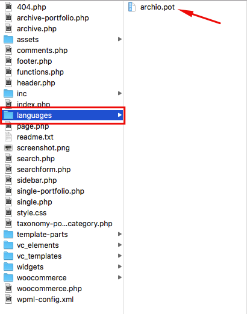
You will see file there that you can use for translation (theme name.pot). Please consider that the name of these files should be the same as your default language code which you have set in wp-config.php file explained at the beginning of tutorial.
4. Use Loco Translate.
The Loco Translate is a third party plugin which makes it possible to edit the PO files and compile them to MO files directly from the WordPress Admin section.
5. Alternatively Use POEDIT.
If for any reason you can not use the Loco Translate plugin, you can use POEDIT software to do your translation and generate MO files alternatively. For more detailed information on how to use POEDIT
5.1. You need download POEdit from: https://poedit.net/
5.2. Second thing is to open default language files form your theme. in normal our theme, it is located in languages folder inside theme folder. You should use this default file for translation but you need to create a new file when you are done. Most themes has the same structure and language files should be somewhere inside theme folder. There is chance that your theme is not ready for translation so it might take time to modify.
5.3. Now in the Poedit click on original text one by one and write your translation underneath. Just like you can see iu the screenshot below. It will take some time to get through all of them so be patient.
If you think that some translations you won’t need you can leave them as they are in the original language.

5.4. Now the most important part: When you are saving your file in theme language folder you should use proper language code.
For instance if you have translated WordPress theme to German you shoulduse “de_DE.po” as file name and “fr_FR.po” for French. This will make sure that WordPress understands what language you are referring to.
Please note: Default language file extension is .pot (such as organic.pot... ) but you have to use .po in order to make your translation work. Also Poedit application will create .mo and it needs to be included in languages folder as well.

5.5. Now WordPress will use theme language the same as your WordPress language. If your WordPress dashboard uses French, don’t expect for theme to show German. Changing WordPress language will automatically
change theme language if it is available in the theme language folder under proper name we discussed in Step 4.
5.6. Changing WordPress language is as easy as adding
define ('WPLANG', 'fr_FR');
to the wp-config.php file located at your WordPress installation root folder.
Beware! You need to activate your child theme from Appearance menu to see translation working.
Beware! You will need to clear cache to see the translation.
Setting Default Language of WordPress
Since the introduction of WordPress version 4, there is a new option in general settings section which you can use to select your installation default language. Go to Settings > General > Default Language to see the option.

Thank you!
SEO - #back to top
Our themes are optimized by with H1, H2, H3, H4, H5 tags, clean code, HTML5 but if you want to get higher ranking on search engines, you must need some help from SEO plugins and Google Pagespeed Service:
UPDATE OUR THEME - #back to top
NOTICE: YOU MUST BE BACKUP YOUR DATA BEFORE UPDATE THE THEME.
You can update our theme using some ways bellow:
1. Update theme using Envato WordPress Toolkit.or
2. You can update manual theme:
- If you have any troubles while using auto update ( such as permissions issue ) , and you want to update manually the theme via FTP or Cpanel.
- You download latest version of the theme on ThemeForest download page, and you rename the folder contain the old theme, then create a new folder and insert the latest theme into it.
Support - #back to top
The team at CaseThemes are always help you with any questions or recommendations you have about the Zinco theme. If you need any help or support please contact us through the ThemeForest Messaging system or
direct at email: casethemes.net@gmail.com
ticksy system: https://casethemes.ticksy.com/
Version History - #back to top
You can find the version history (Change_Log.txt) file on Zinco_FullPackage.zip folder or you can check changelog on theme sale page.
Once again, thank you so much for purchasing this theme. As I said at the beginning, I'd be glad to help you if you have any questions relating to this theme. No guarantees, but I'll do my best to assist. If you have a more general question relating to the themes on ThemeForest, you might consider visiting the forums and asking your question in the "Item Discussion" section.